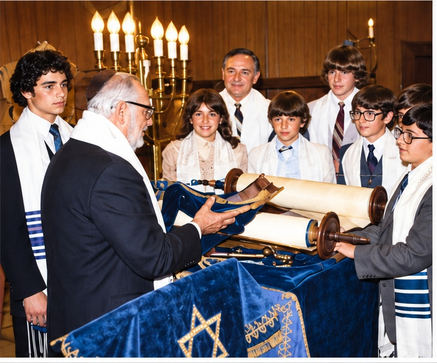
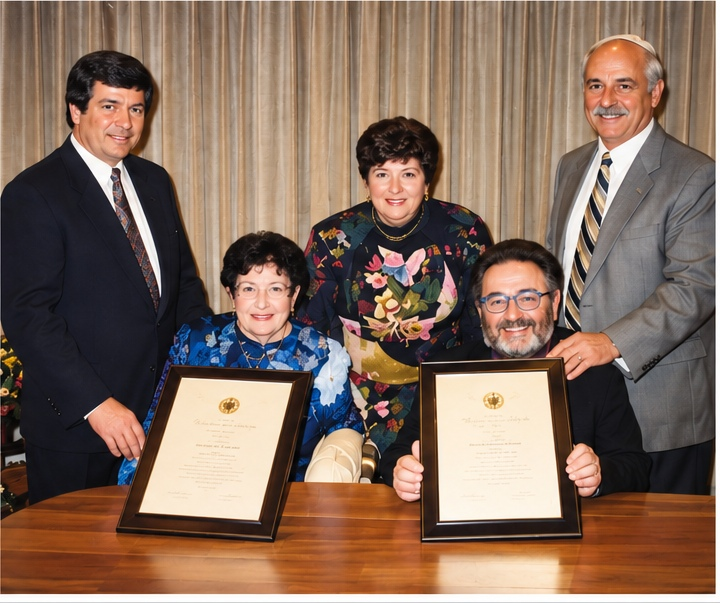

75th Anniversary Program
Congregation Tifereth Israel celebrated its 75th anniversary on May 18, 1997 under the theme “Honoring the Past — Planning the Future.”
Charter Members
Leon Eskenas
Nissim Eskenazi
Morris Gibely
Robert Hasday
Joseph Havian
David Leon
Joseph Pernitchi
Congregation Presidents
1922–1940 — Leon Eskenas
1940–1943 — Victor Eskenas
1943–1945 — David Fermon
1945–1955 — William Behar
1955–1972 — Joseph Gibely, I
1972–Present — Joseph Gibely, II
Ladies Auxiliary Presidents
September, 1954–November, 1964 — Gertie Gibely
November, 1964–September, 1972 — Vickie Freedman
September, 1972–September, 1974 — Ida Polonsky
September, 1974–September, 1976 — Norma Mazur
September, 1976–June, 1982 — Myrna Schlesinger
June, 1982–September, 1987 — Millie Becker
September, 1987–September, 1995 — Rose Harsfield
September, 1995–Present — Joanne Pressman
Religious Leaders
1922–1956 — Joseph Havian
1956–1988 — Leo Gibely
1960–1969 — Michael Faro
1971–1982 — Lenny Stein
1972–Present — Joseph Gibely, II
1982–Present — Rabbi Dov B. & Barbara D. Pikelny
1983–Present — Thomas Bloom
1988–1993 — Maurice Arieli
1990–Present — Joanne Pressman
1995–Present — Benjamin Behar
Program
Welcome — Joseph Gibely, II, Congregation President
Greetings from the City of Peabody — Mayor Peter Torigian
Blessing — Rabbi Dov B. Pikelny
Dinner
Candle Lighting — Representatives of Charter Members
“From Here to ?” — Rabbi Dov B. Pikelny
Presentation — Joanne Pressman, Auxiliary President
Congregation Tifereth Israel Timeline — Do You Remember?
02/15/22 — Chartered
1957 — Purchased our own building on Pierpont Street
04/24/66 — Testimonial to “Uncle” Leo Gibely, at Kings Grant, Danvers
07/10/66 — The first of many Annual Picnics, at Genoda Park, Gloucester
12/13/70 — Testimonial to Joseph Gibely, I and Sophie Pernitchi, at Colonial Country Club, Lynnfield
12/70 — First issue of our “Newsletter”
10/01/72 — 50th Anniversary Celebration, at Lombardo’s East Boston
07/24/76 — Testimonial to Victor Havian, and Morris Gibely’s retirement party, at Beef & Oyster, Salem
12/19/76 — The first of several annual Hanukkah children’s parties
04/19/80 — Retirement party for Yanto Gibely, Izzy Hasday, Ralph Polonsky, Sam Savy, and Josh Yonis, at Augustine’s, Saugus
10/08/82 — The first of our monthly Friday evening family services with Rabbi Dov B. and Barbara D. Pikelny officiating.
04/03/83 — A “Strawberry Festival” and “Kitchen Shower” held by the Ladies Auxiliary to stock our newly remodeled kitchen
11/05/83 — Testimonial to Lionel Harsfield and Izzy Hasday, at the synagogue, in recognition of work done in major renovations to social hall
06/29/86 — Dedication of Leo Gibely Study, at the synagogue, presented by Rabbi Dov & Barbara Pikelny
05/03/87 — Testimonial to Joseph Gibely, II at the synagogue
05/07/89 — “A Night with Millie”, sponsored by the Ladies Auxiliary
10/02/94 — Testimonial to honor Rabbi Dov & Barbara Pikelny on their 13th year of service, at the synagogue.


Enhanced and colorized by AI from the original 1997 program photograph.


Enhanced and colorized by AI from the original 1997 program photograph.